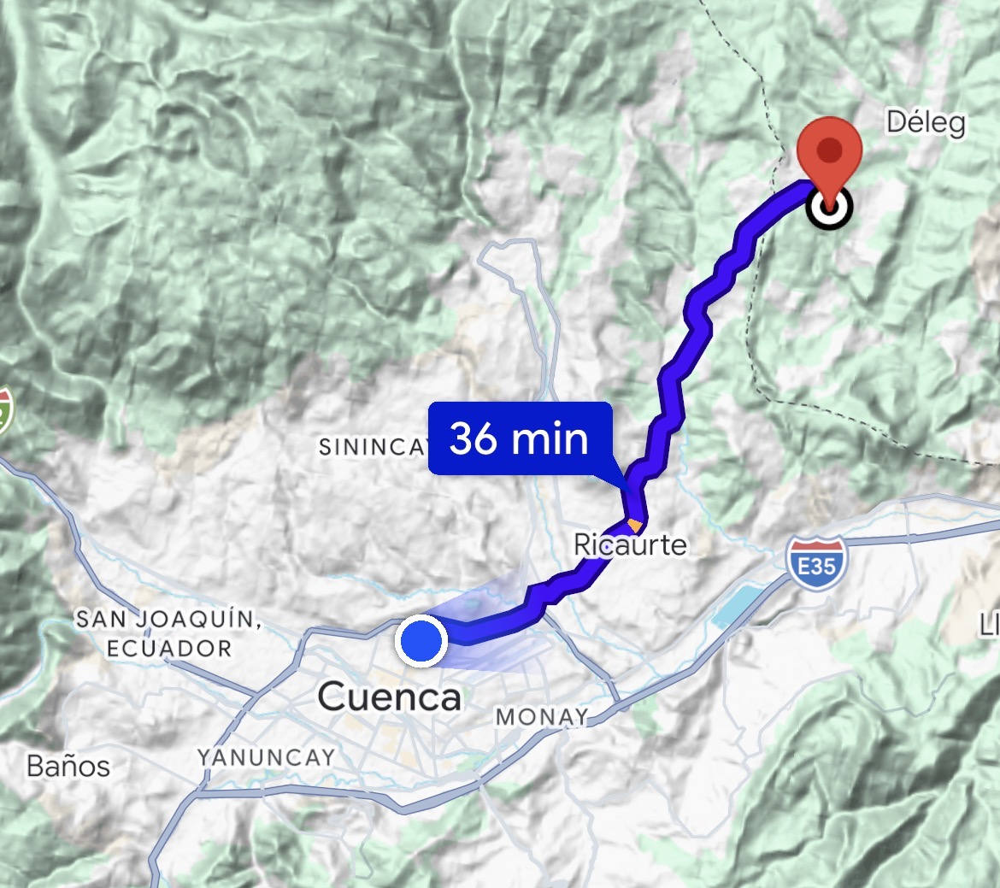

Cómo llegar
Quinta Las Cumbres
Desde Cuenca hacia Déleg · 36 min aprox.

Ambas opciones usan el mismo punto de llegada.
-2.791370, -78.936028
Cómo llegar
Desde Cuenca hacia Déleg · 36 min aprox.

Ambas opciones usan el mismo punto de llegada.
-2.791370, -78.936028